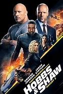

|
1.
The Fast and the Furious
(2001)
1hr 46min | Action, Crime, Thriller
 6.8/10
 58
Official Trailer
|
LA street racer Dominic Toretto (Vin Diesel) falls under the suspicion of the LAPD for a string of high-speed electronics truck robberies. Brian O'Connor (Paul Walker) an officer of the LAPD, joins the ranks of Toretto's highly skilled racing crew undercover to convict Toretto. However, O'Connor finds himself both enamored with this new world and in love with Toretto's sister, Mia (Jordana Brewster) As a rival racing crew gains strength, O'Connor must decide where his loyalties lie. |
Vin Diesel
Paul Walker
Michelle Rodriguez
Jordana Brewster
Rick Yune
|
Rob Cohen
|
|
2.
2 Fast 2 Furious
(2003)
1hr 47min | Action, Crime, Thriller
5.9/10
38
Official Trailer
|
Brian O'Conner has left LA due to his illegal actions from the first movie and now soars the streets of Miami making money here and there by street racing. Watched by Customs Agent Monica Fuentes, Brian is caught by the police and is given a deal by Agent Markham and Bilkins to go undercover and try to bring down drug lord Carter Verone in exchange for his criminal record to be erased. Brian agrees but only if he is given permission to choose his partner. Brian heads home to Barstow, California where he recruits an old friend Roman Pearce to help him. Pearce agrees but only for the same deal Brian was offered. With the help of Monica, Brian and Rome work together to take down Verone. |
Devon Aoki
Paul Walker
Tyrese Gibson
Ludacris
Eva Mendes
Cole Hauser
|
John Singleton
|
|
3.
The Fast and the Furious: Tokyo Drift
(2006)
1hr 44min | Action, Crime, Thriller
6/10
45
Official Trailer
|
Sean Boswell, who has always been an outsider. A loner at school, his only connection to the indifferent world around him is through illegal street racing -- which has made him particularly unpopular with the local authorities. To avoid jail time, Sean is sent out of the country to live with his Farther in the military, in a cramped apartment in a low-rent section of Tokyo. In the land that gave birth to the majority of modified racers on the road, the simple street race has been replaced by the ultimate pedal-to-the-metal, gravity-defying automotive challenge - drift racing, a deadly combination of brutal speed on heart stopping courses of hairpin turns and switchbacks. For his first unsuccessful foray in drift racing, Shean unknowingly takes on D.K., the "Drift King," with ties to the Yakuza, the Japanese crime machine. The only way he can pay off the debt of his loss is to venture into the deadly realm of the Tokyo underworld, where the stakes are life and death. |
Lucas Black
Nathalie Kelley
Sung Kang
Brian Tee
Bow Wow
|
Justin Lin
|
|
4.
Fast & Furious
(2009)
1hr 47min | Action, Crime, Thriller
6.6/10
46
Official Trailer
|
Dominic Toretto, street racer-thief who's still wanted by both the law and some criminals he has crossed, decides to cut himself from everyone close to him including his girlfriend Letty. Later he learns Letty was killed in L.A. so he returns to find out what happened. Brian Conner, an undercover cop allowed Dom to escape instead of turning him in, now works for the FBI. He's been searching for a elusive drug dealer known as Braga. His trail leads him to the same man that Dom is looking for. It seems that Letty was working as a courier for Braga. When Braga searches for some new drivers, Dom and Brian put themselves forward. Dom wants to get to the man who killed Letty while Brian is looking for Braga. |
Vin Diesel
Paul Walker
Michelle Rodriguez
John Ortiz
Gal Gadot
Sung Kang
|
|
5.
Fast Five
(2011)
1hr 46min | Action, Crime, Thriller
7.3/10
66
Official Trailer
|
Former cop Brian O'Conner partners with ex-con Dom Toretto on the opposite side of the law. Since Brian and Mia Toretto broke Dom out of custody, they've blown across many borders to elude authorities. Now backed into a corner in Rio de Janeiro, they must pull one last job in order to gain their freedom. As they assemble their elite team of top racers, the unlikely allies know their only shot of getting out for good means confronting the corrupt businessman who wants them dead. But he's not the only one on their tail. Hard-nosed federal agent Luke Hobbs never misses his target. When he is assigned to track down Dom and Brian, he and his strike team launch an all-out assault to capture them. But as his men tear through Brazil, Hobbs learns he can't separate the good guys from the bad. Now, he must rely on his instincts to corner his prey... before someone else runs them down first. |
Vin Diesel
Paul Walker
Tyrese Gibson
Ludacris
Gal Gadot
Elsa Pataky
Jordana Brewster
Michelle Rodriguez
Sung Kang
Dwayne Johnson
|
|
6.
Fast & Furious 6
(2013)
2hr 10min | Action, Adventure, Thriller
7.1/10
61
Official Trailer
|
Agent Hobbs (Dwayne Johnson) summons Dom (Vin Diesel) and his crew to London in order to take on a team of mercenary drivers who have caused havoc across a dozen countries in this pedal-to-the-metal installment of the rubber-burning action franchise. Having just earned a tidy $100 million for taking down a ruthless criminal kingpin, Dom and Brian (Paul Walker) have decided to lie low for a while. Fugitives from the law, they're constantly looking over their shoulders, no matter where they travel. Meanwhile, the malevolent leader of an elusive criminal outfit (Luke Evans) has incurred the wrath of Agent Hobbs, who has decided that the only way to shut them down is to beat them on their own turf. Realizing that Dom knows the only drivers in the world with the skills to get the job done, Agent Hobbs offers them all full pardons if they will come to London, and get back behind the wheel. The closer the renegade drivers get to the organization, however, the more apparent it becomes that Dom's former lover Letty (Michelle Rodriguez) is not only still alive, but a key figure among their ranks. Now, with their freedom finally within reach, Dom and the team reassemble for their most dangerous mission to date. |
|
7.
Furious 7
(2015)
2hr 17min | Action, Adventure, Thriller
7.1/10
67
Official Trailer
|
Dominic and his crew thought they'd left the criminal mercenary life behind. They'd defeated international terrorist Owen Shaw and went their separate ways. But now, Shaw's brother, Deckard Shaw, is out killing the crew one by one for revenge. Worse, a Somalian terrorist called Jakarde and a shady government official called "Mr. Nobody" are both competing to steal a computer terrorism program called "God's Eye," that can turn any technological device into a weapon. Torretto must reconvene with his team to stop Shaw and retrieve the God's Eye program while caught in a power struggle between the terrorist and the United States government. |
Vin Diesel
Paul Walker
Djimon Hounsou
Jason Statham
Dwayne Johnson
Tony Jaa
|
James Wan
|
|
8.
The Fate of the Furious
(2017)
2hr 16min | Action, Crime, Adventure
6.7/10
56
Official Trailer
|
Dominic Toretto (Vin Diesel) and Letty Ortiz (Michelle Rodriguez) are on their honeymoon in Havana when Dom's cousin Fernando (Janmarco Santiago) gets in trouble owing money to local racer Raldo (Celestino Cornielle). Sensing Raldo is a loan shark, Dom challenges Raldo to a race, pitting Fernando's re-worked car against Raldo's, and wagering his own show car. After narrowly winning the race, Dom allows Raldo to keep his car, earning his respect, and instead leaves his cousin with his show car. The next day, Dom is approached by the elusive terrorist Cipher (Charlize Theron), who coerces him into working for her. Shortly afterwards, Dom and his team, comprising Letty, Roman Pearce (Tyrese Gibson), Tej Parker (Ludacris), and Ramsey (Nathalie Emmanuel), are recruited by Diplomatic Security Service (D.S.S.) Agent Luke Hobbs (Dwayne "The Rock" Johnson) to help him retrieve an E.M.P. device from a military outpost in Berlin, Germany. During the getaway, Dom goes rogue, forcing Hobbs off the road and stealing the device for Cipher. Hobbs is arrested and locked up in the same high-security prison in which he helped imprison Deckard Shaw (Jason Statham). |
Vin Diesel
Dwayne Johnson
Jason Statham
Kurt Russell
Charlize Theron
Luke Evans
|
F. Gary Gray
|
|  |
9.
Fast & Furious Presents: Hobbs & Shaw
(2019)
2hr 17min | Action, Thriller, Adventure
6.4/10
60
Official Trailer
|
This stand-alone 'Fast and Furious' film opens in London, England where a team of MI6 agents led by Hattie Shaw (Vanessa Kirby) storm a warehouse to retrieve a deadly virus called "The Snowflake". They are found by the super-enhanced Brixton Lore (Idris Elba). Because of his cybernetic augmentations, he is able to sense incoming attacks, which allows him to wipe the floor with all of the other agents. Hattie injects her right hand with the Snowflake and escapes from Brixton's sight. He grabs a radio and makes it seem as though Hattie is a traitor who took the virus for herself. Lawman Luke Hobbs (Dwayne "The Rock" Johnson) and outcast Deckard Shaw (Jason Statham) form an unlikely alliance when a cyber-genetically enhanced villain threatens the future of humanity. |
Dwayne Johnson
Jason Statham
Idris Elba
Vanessa Kirby
Eiza González
|
David Leitch
|
|
10.
F9
(2021)
2hr 25min | Action, Crime, Adventure
-.-/10
--
Official Trailer
|
Cypher enlists the help of Jakob, Dom's younger brother to take revenge on Dom and his team. |
Vin Diesel
Michelle Rodriguez
Tyrese Gibson
Ludacris
John Cena
Nathalie Emmanuel
Charlize Theron
|
Justin Lin
|